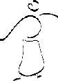
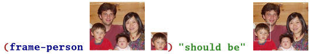

HtDP exercise 10.2.1, page 145 [contains-doll?, contains?]; read section 10.2 to get the definitions for inventory and inventory-record
HtDP exercise 10.2.2, page 146 [show-picture]; here are some toy images: 


| TeachScheme! 2004 |
| Running DrScheme |
Select Run from the start menu, and enter
h:/mflatt/drscheme
| Daily Survey |
| Monday Morning |
| Errors | ||
| * | HtDP exercise 2.4.1, page 14 [errors] | |
| * | HtDP exercise 2.4.2, page 14 [errors] | |
| Numbers | ||
| * | HtDP exercise 2.2.3, page 11 [triangle] | |
| Images | ||||||||
| * | Define the function add-glasses that takes two images: a 128x128-pixel person image, and an image (of any size) representing glasses. The result should be an image with the given person wearing the glasses, which is constructed by centering the glasses image on top of the person image, and using the glasses image as its own mask. Here are some person and glasses images that you can use for testing:
Example:
| |||||||
| * | Define the function add-beard that is like add-glasses, but the second image is a beard image. The beard should be centered horizontally, but bottom-aligned with the person image. Here is a beard image that you can use for testing: | |||||||
| Booleans, and, or | |||
| ** | Define the function wearing-glasses? that takes two person images and a glasses image. It returns true or false. The result is true if the second image matches the first image plus glasses (so the result is true only when the second image already includes glasses). | ||
| ** | Define the function same-person-maybe-disguised? that takes four images: a source person image, a target person image, a glasses image, and a beard image. It returns true or false. The result is true if the second image is that same as the first, possibily with glasses and/or beard added to the first. Example:
| ||
| Monday Afternoon |
| Cond and numbers | ||
| * | HtDP exercise 4.4.2, page 44 [tax] | |
| Cond and symbols | ||
| * | HtDP exercise 5.1.5, page 50 [check-color] | |
| Using posns | ||
| * | Define the function posn-image+ that is like the offset-image+ operator, except that it takes a posn for the offset instead of two numbers. The contract for posn-image+ is image posn image -> image. | |
| ** | Define the function frame-person that takes two images, where the second appears in the first. The result is an image like the first one, but with a frame added around the place where the second image appears.  | |
| Cond and posns | ||
| ** | Define the function frame-person-if-present that is like frame-person, except that the second image provided to the function may not appear in the first image. In that case, the first image should be returned unmodified. | |
| Producing posns | ||
| ** | Define the function double-posn which takes a posn an returns a posn. The X value of the returned posn should be double the X value of the given posn, and the Y value of the returned posn should be double the Y value of the given posn. | |
| *** | Define the function find-image-bottom that is like find-image, but returns the location of the second image's bottom-right corner within the first image (instead of the top-left corner). | |
| Tuesday Morning 1 |
| Using define-struct | ||
| * | Here's a data definition: ;; A shirt is ;; (make-shirt num sym) (define-struct shirt (size color))Write down three example shirts. | |
| * | Write the function shirt-too-big?, which determines whether a shirt is larger than a size 17. | |
| ** | Write the function dry-too-hot, which takes a shirt and returns a shirt that is the same color, but half the size. | |
| Writing Data Definitions | ||
| * | Create a data definition for socks. A sock has a size, a color, and some number of holes. | |
| * | Write the function darn, which takes a sock and returns one with the same size and color, but one less hole (or zero holes if the given sock has no holes). | |
| Multiple Arguments | ||
| ** | Write the function wash-sock-with-new-shirt that takes a sock and a shirt. The result is a sock like the given one, but with the given shirt's color. | |
| Tuesday Morning 2 |
| Writing a Data Definition with Variants | ||
| * | Write a data definition for garment, which is either a shirt or a sock. | |
| * | Write the function garment-too-big? which determines whether the given garment is too big. A shirt is too big if it's larger than size 17, and a sock is too big if it is larger than size 12. | |
| Multiple Arguments | ||
| ** | Write the function wash-garment-with-new-shirt, which takes a garment and a shirt. The result is a garment like the given one, but with the given shirt's color. | |
| Adding Variants | ||
| *** | Create a data definition for scarf, where a scarf has a color and fabric. | |
| *** | Modify your garment data definition to include a scarf case, and update all garment functions. (Scarves are one-size-fits-all, so they are never too big.) | |
| Tuesday Afternoon |
| Image Lists | ||
| * | Write the data definition for a list-of-image. | |
| * | Write the function has-groucho?, which takes a list of images and determines whether groucho glasses appear in the list. | |
| * | Write the function stack-images, which takes a list of images and returns an image where the first image is added on top of the second item, the second is added on top of the third, and so on. The result image should always be 100 pixels wide and 100 pixels tall, and it should have a blue background. | |
| Nested Conditionals | ||
| ** | Write the function count-groucho, which takes a list of images and produces the number of times that groucho glasses appear in the list. | |
| Multiple Arguments | ||
| ** | Write the function image-in-list?, which takes an image and a list of images. The result is true if the image appears in the list, false otherwise. | |
| Multiple Lists | ||
| *** | Write the function lists-overlap?, which takes two lists of images and determines whether any element of the first list appears in the second list. | |
| Wednesday |
| List to List | ||
| * | HtDP exercise 10.1.4, page 140 [convert-euro, convert-euro-1] | |
| List to List with Cond | ||
| * | HtDP exercise 10.1.5, page 141 [eliminate-exp] | |
| ** | HtDP exercise 10.1.6, page 141 [name-robot, substitute] | |
| List of Structs | ||
| ** | HtDP exercise 10.2.1, page 145 [contains-doll?, contains?]; read section 10.2 to get the definitions for inventory and inventory-record | |
| ** | HtDP exercise 10.2.2, page 146 [show-picture]; here are some toy images:  | |
| *** | HtDP exercise 10.2.4, page 146 [whose-number, phone-number] | |
| List of Lists | ||
| ** | Implement the function sum-lists, which takes a list of lists of numbers and returns a list of numbers. The result list has one number for each list in the input, where the number is the sum of the list. (sum-lists (list (list 1 2 3) (list 3 4) (list 2 3))) "should be" (list 6 7 5) | |
| Thursday Morning |
| Compound Data | ||
| * | HtDP exercise 6.6.1, page 73 [circle] | |
| * | HtDP exercise 6.6.4, page 74 [translate-circle] | |
| * | HtDP exercise 6.6.7, page 75 [rectangle] | |
| * | HtDP exercise 6.6.10, page 76 [translate-rectangle] | |
| Drawing | ||
| ** | HtDP exercise 6.2.1, page 56 [teachpack intro] | |
| ** | HtDP exercise 6.6.2, page 73 [draw-a-circle] | |
| ** | HtDP exercise 6.6.8, page 75 [draw-a-rectangle] | |
| Variants | ||
| * | HtDP exercise 7.4.1, page 93 [shape] | |
| * | HtDP exercise 7.4.3, page 93 [translate-shape] | |
| ** | HtDP exercise 7.4.2, page 93 [draw-shape] | |
| Lists | ||
| * | HtDP exercise 10.3.1, page 151 [losh] | |
| * | HtDP exercise 10.3.3, page 151 [translate-losh] | |
| ** | HtDP exercise 10.3.2, page 151 [draw-losh] | |
| Thursday Afternoon |
| Trees | ||
| * | Create your own examples of family-tree-nodes (see HtDP page 192) | |
| * | HtDP exercise 14.1.3, page 198 [count-persons] | |
| ** | HtDP exercise 14.1.5, page 198 [eye-colors] | |
| ** | HtDP exercise 14.1.4, page 198 [average-age] | |
| *** | HtDP exercise 14.3.3, page 207 [replace], start by reading section 14.3 | |
| *** | HtDP exercise 14.3.4, page 207 [depth] | |
| Evaluator | ||
| **** | HtDP exercise 14.4.1, page 208 [expr], start by reading section 14.4 | |
| **** | HtDP exercise 14.4.3, page 208 [evaluate], but evaluate every variable to 0 instead of returning false for non-numeric expressions | |
| **** | HtDP exercise 14.4.4, page 208 [substitute] | |
| **** | HtDP exercise 17.7.1, page 248 [app] | |
| **** | HtDP exercise 17.7.2, page 248 [defn] | |
| **** | HtDP exercise 17.7.3, page 248 [interpret-with-one-def] | |
| **** | HtDP exercise 17.7.4, page 249 [interpret-with-defs] | |
| Friday Morning |
| Resources |
Some university course pages:
| Last update: Friday, July 16th, 2004mflatt@cs.utah.edu |